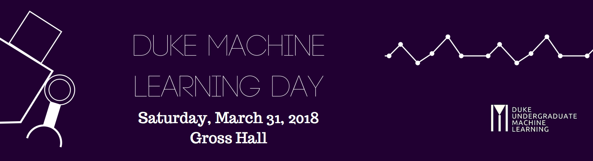

Duke Undergraduate Machine Learning Day
Saturday, March 31, 2018 | Gross Hall, Duke University

Schedule
- 9am-10am: Registration and breakfast (Gross Hall Atrium)
- 10am-10.15am: Introduction (Gross Hall 107)
- 10.15am-10.45am: Machine Learning Methods in Clinical Settings (Keynote) by Dr. Katherine Heller (Gross Hall 107)
- 11am-12pm: An Introduction to Machine Learning (Workshop) by Dr. Kyle Bradbury (Gross Hall 103)
- 11am-12pm: Differential Privacy and Algorithm Selection (Workshop) by Dr. Ashwin Machanavajjhala (Gross Hall 330)
- 12pm-1pm: Networking lunch and poster presentations (Gross Hall Atrium)
- 1pm-1.45pm: Deep Learning and Neural Networks (Workshop) by Dr. Lawrence Carin (Gross Hall 103)
- 1.55pm-2.40pm: An Introduction to Entity Resolution (Workshop) by Dr. Rebecca Steorts (Gross Hall 103)
- 2.30pm-3pm: Refreshments (Gross Hall Atrium)
- 3pm-3.45pm: Research spotlight presentations (Gross Hall 107)
- 4pm-4.45pm: Undergraduate student panel of Serge Assaad, Rohith Kuditipudi, Yixin Lin, Angie Shen, and Mary Ziemba, moderated by Dr. Rebecca Steorts (Gross Hall 107)
- 4.45pm-5.30pm: Graduate and post-graduate panel of Dr. Brenda Betancourt, Andee Kaplan, and Nisarg Raval, moderated by Dr. Rebecca Steorts (Gross Hall 107)
Speaker & Panelist Bios
- Serge Assaad
- Serge Assaad is a senior at Duke University studying Biomedical and Electrical & Computer Engineering with a minor in Mathematics. He is interested in the application of machine learning to medical problems. He has worked on classifying vascular anomalies from Doppler ultrasound audio data.
- Dr. Brenda Betancourt
- Dr. Brenda Betancourt is a Postdoctoral Associate in the Department of Statistical Science at Duke University working with Dr. Rebecca Steorts. She is currently working on developing new Bayesian models and algorithms for entity resolution used to identify duplicate records in large noisy databases with applications on human rights violations and social statistics, among others. Brenda is originally from Bogotá, Colombia. She obtained her undergraduate degree at Universidad Nacional de Colombia where she was trained in classical Statistics. In 2008, she completed an M.S. in Statistics from the University of Puerto Rico, Río Piedras where she started to work on Bayesian Statistics. She moved to California in 2010 to pursue a Ph.D. in Statistics at the University of California, Santa Cruz where she worked on modeling and link prediction of dynamic network data.
- Dr. Kyle Bradbury
- Dr. Kyle Bradbury is the Managing Director of the Energy Data Analytics Lab at the Duke University Energy Initiative. He brings experience in machine learning and statistical modeling to energy problems. He completed his Ph.D. at Duke University, with research focused on modeling the reliability and cost trade-offs of energy storage systems for integrating wind and solar power into the grid. Dr. Bradbury holds an M.S. in Electrical Engineering from Duke University, where he specialized in statistical signal processing and machine learning, and a B.S. in Electrical Engineering from Tufts University. He has worked for ISO New England, MIT Lincoln Laboratories, and Dominion.
- Dr. Lawrence Carin
- Dr. Lawrence Carin earned his B.S., M.S., and Ph.D. degrees in Electrical Engineering at the University of Maryland, College Park, in 1985, 1986, and 1989, respectively. In 1989 he joined the Electrical Engineering Department at Polytechnic University (Brooklyn) as an Assistant Professor, and became an Associate Professor there in 1994. In 1995 he joined the Electrical Engineering Department at Duke University, where he is now a Professor, and Vice Provost for Research. From 2003-2014 he held the William H. Younger Distinguished Professorship, and he was ECE Department Chair from 2011-2014. Dr. Carin's early research was in the area of electromagnetics and sensing, and over the last 15 years his research has moved to applied statistics and machine learning. He is an IEEE Fellow.
- Dr. Katherine Heller
- Dr. Katherine Heller is an Assistant Professor in Statistical Science at Duke University. She is the recent recipient of a Google faculty research award, a first round BRAIN initiative award from the NSF, as well as a CAREER award. She received her Ph.D. from the Gatsby Computational Neuroscience Unit at UCL, and was a postdoc at the University of Cambridge on an EPSRC postdoc fellowship, and at MIT on an NSF postdoc fellowship.
- Andee Kaplan
- Andee Kaplan is a postdoctoral associate at Duke University working with Dr. Rebecca Steorts in the Department of Statistical Science. She recently completed her Ph.D. in Statistics at Iowa State University working with Dan Nordman and Steve Vardeman in the Summer of 2017. Additionally, she also has an M.S. in Statistics from Iowa State University with Heike Hofmann and Dan Nordman and an M.A. in Mathematics at The University of Texas at Austin under the direction of John Luecke and Martha Smith. She received her B.S. in Mathematics with a certificate in Computing from The University of Texas at Austin. Her interests lie in the intersection of Statistics and Computing, with a penchant for statistical graphics and reproducibility. Andee enjoys struggling with JavaScript and learning new languages, R being her first love.
- Rohith Kuditipudi
- Rohith Kuditipudi is a junior at Duke University majoring in Mathematics and Computer Science, and is interested in deep learning and robotics. He has worked with various machine learning groups on campus since freshman year, and is interested in going to graduate school.
- Yixin Lin
- Yixin Lin is a senior Computer Science major at Duke University. Previously, he interned as a KPCB Engineering Fellow at Gusto, a computer vision researcher at AMALTHEA REU, facial recognition at Facebook AML, and deep reinforcement learning at Google Brain. On campus, he has been involved as a director of HackDuke, a venture partner at Contrary Capital, exec on Effective Altruism, as well as research on deep learning with the Carin lab and DNA automata with Dr. John Reif. He's interested in the long road to AGI, and will be joining Facebook after graduation to pursue machine learning research.
- Dr. Ashwin Machanavajjhala
- Dr. Ashwin Machanavajjhala is an Assistant Professor in the Department of Computer Science, Duke University and an Associate Director at the Information Initiative@Duke (iiD). Previously, he was a Senior Research Scientist in the Knowledge Management group at Yahoo! Research. His primary research interests lie in algorithms for ensuring privacy in statistical databases and augmented reality applications. He is a recipient of the National Science Foundation Faculty Early CAREER award in 2013, and the 2008 ACM SIGMOD Jim Gray Dissertation Award Honorable Mention. Ashwin graduated with a Ph.D. from the Department of Computer Science, Cornell University and a B.Tech in Computer Science and Engineering from the Indian Institute of Technology, Madras.
- Nisarg Raval
- Nisarg Raval is a Ph.D. student in the Computer Science department at Duke University. He is interested in developing privacy solutions for mobile systems to protect user privacy without compromising utility of the applications running on those platforms. His research lies at the intersection of privacy, machine learning and mobile systems.
- Angie Shen
- Angie Shen recently graduated from Duke University with a B.S. in Statistics. As an undergraduate, she participated in statistical machine learning research, which involves predicting patient deterioration using electronic health records data. She also interned with a financial consulting company specializing in credit risk prediction. She will be pursuing a Ph.D. in Biostatistics in the Fall.
- Dr. Rebecca Steorts
- Dr. Rebecca Steorts is an Assistant Professor of the Department of Statistical Science at Duke University and affiliated faculty in Computer Science, Biostatistics and Bioinformatics, the information initiative at Duke (iiD), and the Social Science Research Institute. She also holds a Schedule A appointment at the U.S. Census Bureau.
- Mary Ziemba
- Mary Ziemba is a senior at Duke University from New Jersey studying Computer Science and Innovation & Entrepreneurship. Her computer science interests include ethics of algorithms, data privacy, and machine learning. She did machine learning this past summer at Apple, where she will return full-time in the Fall.